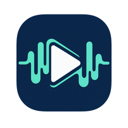

01Find a channel
- Curated catalog on first launch — no setup.
- Filter by category, language, country, media type.
- Search and sort the list.
- Pin the channels you return to.

STREAMS Player.A focused Windows desktop app: browse a curated catalog, add your own streams, and play them — no account, no ads, nothing running in the background you did not ask for.
STREAMS Player is an independent Windows desktop app for internet radio, live video, and RTSP network cameras. It reads a curated, public stream catalog so you get a working list of channels on first run — then lets you search, sort, pin, and add your own, all stored locally on your machine.
The point is calm: a player that stays a player. The catalog refreshes only when you ask, your manually added and imported streams are never overwritten by an update, and there is no account, advertising, analytics, or author-run service. What runs on your PC is what you started.
Everything needed to find, keep, and play a stream — grouped by what you are actually doing.
Open it and pick a channel — that is the whole flow. Until packages ship, run it from source; you can also launch a stream directly from the command line.
With the .NET 10 SDK installed, restore, build, and launch from the repository root.
./build.ps1 -RunBrowse the catalog, filter or search, then select a channel. Radio starts in the main window; video and RTSP open in the player window. Launching with no channel selected resumes the last one you played.
Play a stream without touching the catalog.
StreamsPlayer.exe --url "https://example.test/live"Select a saved channel, open Settings, and use Copy command or Create desktop shortcut. Both use the channel's stored id.
StreamsPlayer.exe --id "channel-guid"These channels are planned. None is a published download until its first approved release appears — for now, build from source.